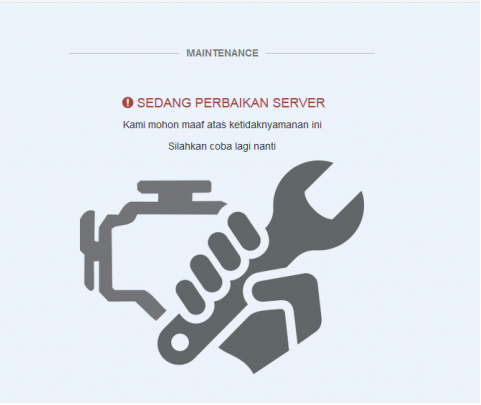
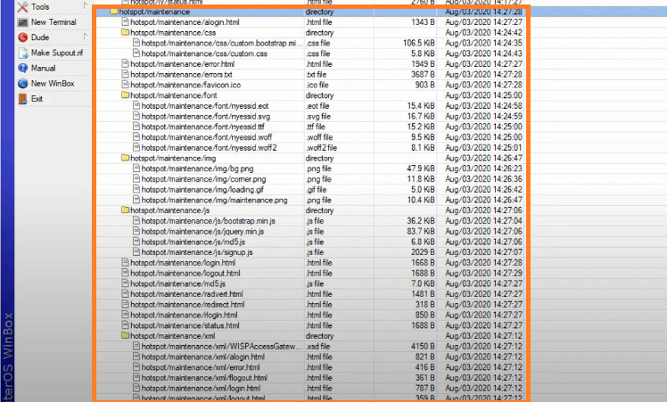
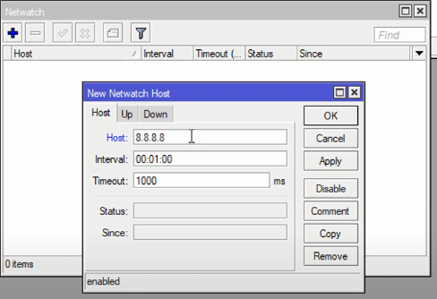
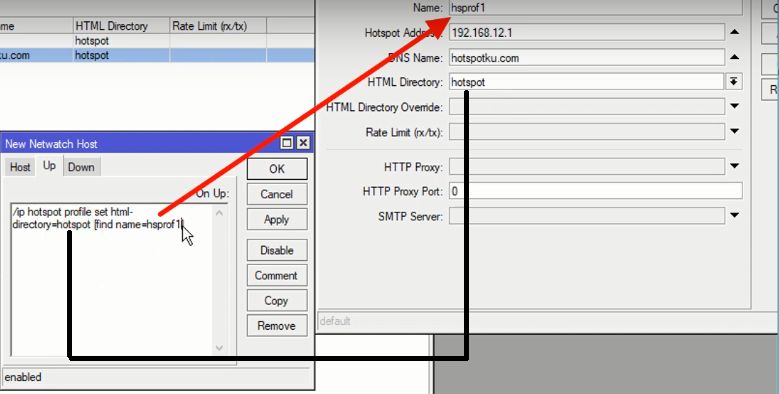
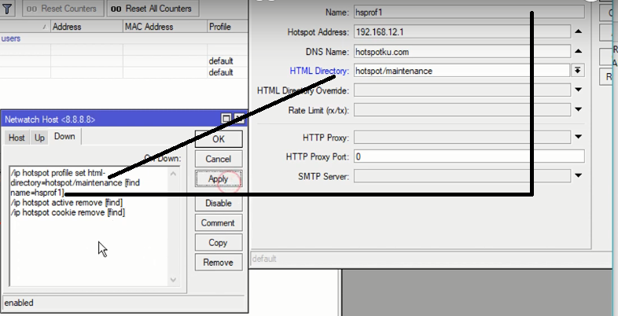

Login
:put (",,0,,,,Disable,");{
:local mac $"mac-address";
:local Mwp [/ip hotspot user get [find name="$user"] uptime];
:local dvc [/ip dhcp-server lease get [find mac-address="$mac"] host-name];
:local Mpkt [/ip hotspot user get [find name="$user"] profile];
:local Md [/ip hotspot user get [find name="$user"] bytes-in];
:local Mu [/ip hotspot user get [find name="$user"] bytes-out];
:local limit [/ip hotspot user get [find name="$user"] limit-bytes-total];
:local totq [(($limit)/1048576)];
:local Mt [((($Md)+($Mu))/1048576)];
:local sisa [($totq-($Md+$Mu)/1048576)];
:local exp [/ip hotspot user get [find name="$user"] comment];
:local Ma [/ip hotspot active print count-only];
/tool fetch url="https://ISIKAN BOOT TELGRAM ANDA/
sendMessage?chat_id=ID TELEGRAM&text==>> LOG-IN $user <<==%0A- IP Address : $address%0A- Mac Address
: $mac%0A- Device : $dvc%0A- User Profil : 1k/3jam%0A- Waktu Terpakai : $Mwp%0A- Kuota Terpakai :
$Mt Mb%0A- exp : $exp%0A- Online : $Ma Users" mode=http keep-result=no}
Logout
/tool fetch url="ISIKAN BOOT TELGRAM ANDA/sendMessage?chat_id=ID TELEGRAM&text=Logout $user $address" keep-result=no
/ip dhcp-client
add add-default-route=no comment=defconf dhcp-options=hostname,clientid \
disabled=no interface=WAN1
add add-default-route=no dhcp-options=hostname,clientid disabled=no \
interface=WAN2
/ ip firewall mangle
add chain=prerouting dst-address=192.168.0.0/24 action=accept in-interface=bridge
add chain=prerouting dst-address=192.168.11.0/24 action=accept in-interface=bridge1
add chain=prerouting in-interface=WAN1 connection-mark=no-mark action=mark-connection new-connection-mark=WAN1_conn
add chain=prerouting in-interface=WAN2 connection-mark=no-mark action=mark-connection new-connection-mark=WAN2_conn
add chain=prerouting in-interface=bridge connection-mark=no-mark dst-address-type=!local per-connection-classifier=both-addresses:2/0 action=mark-connection new-connection-mark=WAN1_conn
add chain=prerouting in-interface=bridge connection-mark=no-mark dst-address-type=!local per-connection-classifier=both-addresses:2/1per-connection-classifier=both-addresses:2/1 action=mark-connection new-connection-mark=WAN2_conn
add chain=prerouting connection-mark=WAN1_conn in-interface=bridge action=mark-routing new-routing-mark=to_WAN1
add chain=prerouting connection-mark=WAN2_conn in-interface=bridge action=mark-routing new-routing-mark=to_WAN2
add chain=output connection-mark=WAN1_conn action=mark-routing new-routing-mark=to_WAN1
add chain=output connection-mark=WAN2_conn action=mark-routing new-routing-mark=to_WAN2
/ ip route
add dst-address=0.0.0.0/0 gateway=192.168.11.1 routing-mark=to_WAN1 check-gateway=ping
add dst-address=0.0.0.0/0 gateway=192.168.0.1 routing-mark=to_WAN2 check-gateway=ping
add dst-address=0.0.0.0/0 gateway=192.168.11.1 distance=1 check-gateway=ping
add dst-address=0.0.0.0/0 gateway=192.168.0.1 distance=2 check-gateway=ping
/ ip firewall nat
add chain=srcnat out-interface=WAN1 action=masquerade
add chain=srcnat out-interface=WAN2 action=masquerade
Ditunggu ya !!!
Ada banyak NTP Server di internet yang bisa digunakan.
Contoh : id.pool.ntp.org , ntp.nasa.gov ,dsb. Gunakan mode=unicast.
/system ntp client> set enable=yes primary-ntp=id.pool.ntp.org secondary-ntp=ntp.nasa.gov mode=unicast
/ip firewall nat add chain=srcnat src-address=10.0.0.0/24 action=src-nat to-addresses=172.16.16.1 out-interface=WAN
/ip dns set allow-remote-requests=yes cache-max-ttl=1d cache-size=5000KiB servers=8.8.8.8,8.8.4.4,1.1.1.1,9.9.9.9
/ip firewall nat
add action=redirect chain=dstnat dst-port=53 protocol=tcp to-ports=53
add action=redirect chain=dstnat dst-port=53 protocol=udp to-ports=53
/ip firewall filter
add action=drop chain=input dst-port=53 in-interface-list=WAN protocol=tcp
add action=drop chain=input dst-port=53 in-interface-list=WAN protocol=udp
#sumber: o-om.com
#======================================
# ANTI HACKER PROTECTED BOOTLOADER BY BUANANET SECURE!
#======================================
# Set Local String
:local logprotectedrouterboot;
:local logreformatholdbutton;
:local logreformatholdbuttonmax;
# Set local Input
:set logprotectedrouterboot "$[/system routerboard setting get protected-routerboot]"
:set logreformatholdbutton "$[/system routerboard setting get reformat-hold-button]"
:set logreformatholdbuttonmax "$[/system routerboard setting get reformat-hold-button-max]"
# Cek jika Bootloader diubah ke Enable
:if ($logprotectedrouterboot ="enabled") do={
# Set info reformat hold button di Identity di winbox untuk jaga-jaga
/system identity set name="BOOTLOADER > Min:$logreformatholdbutton - Max:$logreformatholdbuttonmax"
# Kembalikan BootLoader Kepengaturan Awal
/system routerboard setting set protected-routerboot disabled
/system routerboard setting set reformat-hold-button=20s
/system routerboard setting set reformat-hold-button-max=10m
# tahan 5 detik
:delay 5s
# Shutdown mikrotik atau bisa gunakan /system reboot
/system shutdown
}
#sumber: https://www.o-om.com/2020/10/script-mengamankan-protected-bootloader.html
/ip firewall address-list
add list=LOCAL-IP address=0.0.0.0/8
add list=LOCAL-IP address=10.0.0.0/8
add list=LOCAL-IP address=100.64.0.0/10
add list=LOCAL-IP address=127.0.0.0/8
add list=LOCAL-IP address=169.254.0.0/16
add list=LOCAL-IP address=172.16.0.0/12
add list=LOCAL-IP address=192.0.0.0/24
add list=LOCAL-IP address=192.0.2.0/24
add list=LOCAL-IP address=192.168.0.0/16
add list=LOCAL-IP address=198.18.0.0/15
add list=LOCAL-IP address=198.51.100.0/24
add list=LOCAL-IP address=203.0.113.0/24
add list=LOCAL-IP address=224.0.0.0/4
add list=LOCAL-IP address=240.0.0.0/4
/ip firewall mangle
add action=accept chain=prerouting dst-address-list=LOCAL-IP src-address-list=LOCAL-IP
add action=accept chain=postrouting dst-address-list=LOCAL-IP src-address-list=LOCAL-IP
add action=accept chain=forward dst-address-list=LOCAL-IP src-address-list=LOCAL-IP
add action=accept chain=input dst-address-list=LOCAL-IP src-address-list=LOCAL-IP
add action=accept chain=output dst-address-list=LOCAL-IP src-address-list=LOCAL-IP
#sumber: o-om.com
Panduan Install Mikhmon di Android via Termux
Install Termux PlayStore.
Munculkan CTRL di Termux : Tekan volume up + q
Jalankan command berikut di Termux
pkg update && pkg upgrade -y
pkg install curl
curl -o install-mikhmon https://laksa19.github.io/install-mikhmon.txt
chmod +x install-mikhmon
./install-mikhmon
Buka url http://127.0.0.1:8080 di browser Anda.
Command
Start Mikhmon : ./start-mikhmon
Update Mikhmon : ./update-mikhmon
Remove Mikhmon : ./remove-mikhmon
#sumber: laksa19
/interface bridge
add name=bridge1
/ip pool
add name=dhcp_pool0 ranges=20.20.20.2-20.20.20.254
/ip dhcp-server
add address-pool=dhcp_pool0 disabled=no interface=bridge1 name=dhcp1
/interface bridge port
add bridge=bridge1 interface=ether3
add bridge=bridge1 interface=ether4
/ip address
add address=20.20.20.1/24 interface=bridge1 network=20.20.20.0
/ip dhcp-server network
add address=20.20.20.0/24 gateway=20.20.20.1
/ip dns
set allow-remote-requests=yes cache-max-ttl=1d cache-size=5000KiB servers=\
8.8.8.8,8.8.4.4,1.1.1.1,9.9.9.9
==========================================================
setalah scrip sudah di jalankan, silahkan buat fitur dibawah
# buat Nat
# buat Dhcp client
# buat Hotspot Setup
===========================================================
jika internet down maka akan menampilkan halaman maintenance.
langkah pertama download template maintenancenya Disini

langkah selanjutnya uplod file yang sudah di download kedalam directory html atau menu files pada winbox

kemudian buka menu netwatch. lakukan seperti yang ada di gambar

Tuliskan script pada menu UP

kemudian Tuliskan script pada menu down

untuk directory html silahkan isikan dengan nama template utama. yang di ubah hanyalah script saja pada menu Down
silahkan tulis ulang script di bawah
==========================================================
# Host : 8.8.8.8
# Script up : /ip hotspot profile set html-directory=hotspot [find name=hsprof1]
# Script down ; /ip hotspot profilr set html-directory=hotspot/maintenance [find name=hsprof1]
/ip hotspot active remove [find]
/ip hotspot cookie remove [find]
===========================================================